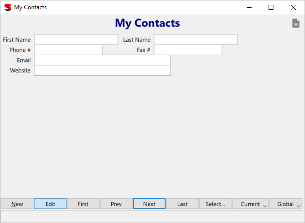

Next, we want to create a way to access (add, view, update, and delete) records in the table we created above. Suneido has a standard kind of building block for doing this called Access. Select your library (mylib), choose New Item from Library View's File menu, and enter a name of My_ContactsAccess.
Note: Library record names must be valid global identifiers i.e. a capital letter followed by letters, numbers, or underscores with an optional final question mark (?). Case is significant.
Then enter the following as the definition:
#(Access mycontacts)
and run it from the WorkSpace by evaluating:
Window(My_ContactsAccess)
You'll see an Access window where you can add, view, update, and delete records. Notice that you got appropriate prompts and controls for your fields. (Or not, if you used different names!) These come from field definitions in stdlib. There are a number of standard fields (like Field_phone) defined in the Datadict folder of stdlib, and of course you can also define your own. The email field supports clicking on it to send an email to that address, and the website field allows you to view the address in your default browser. You can use Select to find records. Summarize lets you count your records or determine the total, max, min, or average of fields.
Note: Our convention is to put a prefix on all the global names for an application to make sure they don't clash with any other names. In this case we've used a prefix of "My_".
But you probably want to make the layout a little nicer, for example:
#(Access mycontacts
title: "My Contacts"
(firstname group: 0) (lastname group: 1) nl
(phone group: 0) (fax group: 1) nl
(email group: 0) nl
(website group: 0)
)
Access defaults to a FormControl
Note: The group values above are numbers, i.e. zero and one.
